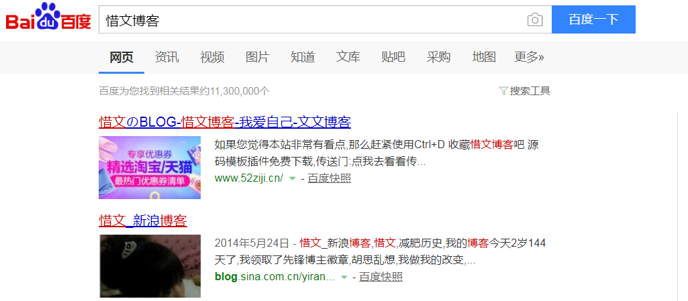

好不容易来更新一下文章，写写几个字
有好多网站怎么办？
网站做多了管理不过来怎么办？试过去站长资源网出售网站，但是审核没有通过，所以现在的打算是把网站程序源码发到二手平台上出售看看，当然还会出售别的网站程序源码，这些源码都是很不错的希望可以卖个好价钱
wordpress的程序
这个博客程序还是很不错的，功能齐全，对搜索引擎特别友好，看这个截图就知道了

还有一些四方交易平台的源码，还是很优秀的
近期
最近我下铺想学习做网站，我决定把他交会了
想着让他使用hexo的博客系统，但是不知道怎么回事就是安装不算npm,所以只能在本地使用phpstudy搭建个typecho的博客系统，这个博客系统是使用php语言所编写的
typecho 这个轻量级博客系统还是很好用的，哈哈
官网：typecho
主题：Themes
插件：plugins
尾
哎呀，没什么好说的，~~~
强大的md编辑器呀